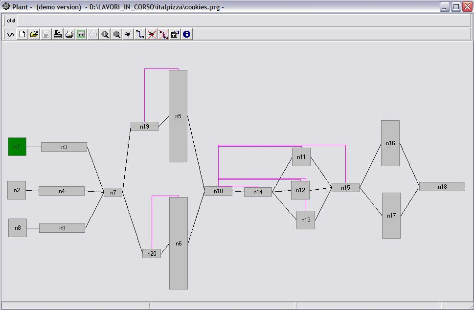

CMG automation
CMG automation
simulazione di impianti
Incrementare la produzione richiede una attenta valutazione delle modifiche necessarie al raggimento degli obiettivi dati. Questa esigenza può essere in qualche modo ridotta ad un problema di ottimizzazione che richiede la ricerca di una soluzione alla domanda:
Qual'è la configurazione di impianto che garantisce il raggiungimento del target di produzione con il minimo di investimento?
Se il flusso logico della produzione è abbastanza semplice è spesso possibile valutare le alternative senza ricorrere a strumenti di calcolo complessi. Vi sono però molti casi nei quali il flusso di produzione è talmente complicato da rendere proibitiva un'analisi non assistita da un computer.
Il livello di complicazione di un flusso di produzione è aumentato dai seguenti fattori:
- Le variazioni di lotto di produzione sono frequenti e bisogna mantenere riconoscibili i componenti dei singoli lotti.
- La linea deve essere svuotata, interamente o sezione per sezione, prima di avviare la produzione di ogni nuovo lotto.
- Per il prodotto, il tempo di attraversamento della linea e' alto.
- Le procedure di svuotamento della linea, dopo un lotto di produzione, sono lente.
- Sono presenti polmonature che devono necessariamente essere dimensionate non solo in termini di capacità ma anche di portata in entrata ed in uscita.
- Una o più macchine nella linea funzionano a ciclo intermittente.
- Le macchine che compongono la linea sono collegate da elementi di collegaemnto, ad esempio trasporti,che creano dei piccoli polmoni. L'errato dimensionamento delle velocita' di attraversamento dei collegamenti possono essere causa di tempi morti nei cambi lotto.
caratteristiche implementate
Il programma scaricabile da questa pagina, e' in versione demo, e ha diverse limitazioni rispetto alla versione full
versione demo
- Caricare in memoria un file esistente.
- eseguire la simulazione di un sistema caricato in memoria.
- eseguire la simulazione di un sistema caricato in memoria.
- modificare alcuni parametri di funzionamento del sistema in memoria
versione full
- Tutte le funzioni della versione demo.
- creazione e modifica di nuovi impianti.

Istruzioni per scaricare e provare Plant
- Scaricate il file compresso da qui. Download file
- Scompattate il file scaricato inserendo i files estratti in una directory vuota. Se non disponete del programma di scompattazione potete scaricare qui una copia di WinZip.
- Doppio click sul file Plant.exe
- Click sulla seconda icona da sinistra, per caricare l'esempio in memoria. Dalla finestra di dialogo selezionare il file cookies.prg. La schermata principale del programma vi apparirà come nella figura a sinistra.
- Click sull'icona che riproduce una calcolatrice per avviare alla simulazione.